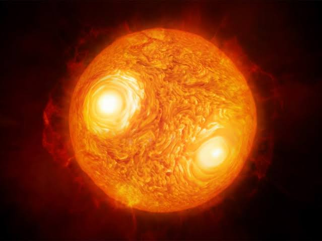

Estrelas
Estrelas são enormes esferas de gás que produzem luz e calor por fusão nuclear. O Sol é a estrela mais próxima da Terra, e existem bilhões delas só na Via Láctea.
- Anãs vermelhas: pequenas e frias, como Próxima Centauri
- Anãs amarelas: como o Sol
- Supergigantes: gigantescas, como Betelgeuse